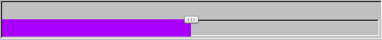
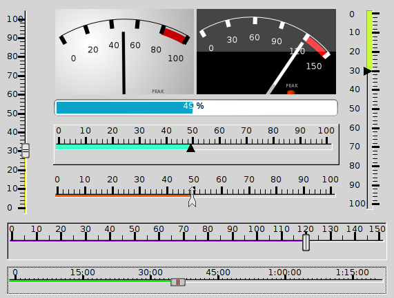
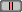

|
class SliderCtrlX : public Ctrl
Derived from Ctrl. Part of Control4U library.
SliderCtrlX is a widget that allows entering an integer value by dragging a thumb. Compared to SliderCtrl, it has several enhanced capabilities :
Has an adjustable scale with adjustable major and minor ticks,
The value can be set continuously or step by step with adjustable value of steps,
Can be used as indicator, with not draggable thumb,
Colored value bar, with adjustable color and width,
Several thumb shapes and possibility to have a customized thumb,
The scale can be inverted,
Possibility to position directly the thumb by a mouse click,
Multiple units for scale, like hours/mn/s alowing it to be used as video progress counter.
As seen in layout designer :

As seen in program :

SlideCtrlX()
Initializes SlideCtrlX with the default behavior :
m_nMin (minimum value) = 0,
m_nMax (maximum value) = 100,
m_bInverted (inverted scale) = false,
m_nStep (step increment) = 1,
m_bRound_step (step by step) = false,
m_bJump (jumps to the clicked value) = false,
m_bUseCustomThumbs (index of custom thumb to use) = 0,
m_nMajorTicks (major ticks stepping) = 10,
m_nMinorTicks (minor ticks stepping) = 2,
m_nMajorTickSize (size of major ticks) = 30,
m_nMinorTickSize (size of minor ticks) = 20,
m_nTickPosition (Tick position) = TOP,
m_nThickness (Bar thickness) = 2,
m_nSliderType (Type of slider) = 0,
m_nThumbNumber (index of pre-defined thumb to use) = 1.
SliderCtrlX& AddOutCtrl( Ctrl* c )
Adds an out Ctrl as last one.
|
c |
Pointer to child Ctrl at the end of child list. Note that U++ never takes ownership of Ctrls - never calls delete for child. That allows using non-heap based Ctrls. |
void Dec()
Decrements the slider value.
virtual Value GetData() const
Default read of slider value
virtual Value GetData( int nIndex ) const
Reads the pre-positionned value at the given index.
|
nIndex |
Index of the pre-positionned value to return. |
virtual void GotFocus()
This method is called when Ctrl receives input focus. Default implementation is to refresh the drawing.
void Inc()
Increments the slider value.
bool IsVert() const
Checks if the slider is vertically oriented.
virtual bool Key(dword key, int repcnt)
This method provides keyboard input. When keyboard event occurs and some of U++ application Ctrls has input focus, its Key method is called. If Key method returns true, processing of key event is finished. If it returns false, U++ calls Key method of parent Ctrl and it repeats until either true is returned or Ctrl has no parent. If such top-level Ctrl is reached, U++ calls its HotKey method. Default implementation is to return immediately if it is an INDICATOR, and to process the arrow keys by calling Dec() if K_LEFT or K_DOWN or Inc() if K_RIGHT or K_UP.
|
key |
The key that has been pressed. |
virtual void LeftDown(Point pos, dword keyflags)
Handles the left mouse button if the slider is a CONTROL. Returns immediately if it is an INDICATOR.
|
pos |
Position of mouse cursor in view coordinates. |
|
keyflags |
Combination of key flags for Shift, Ctrl and Alt keys. |
virtual void LeftRepeat(Point p, dword f)
This method is repeatedly called by default implementation of MouseEvent when mouse left button is pressed for some time, imitating keyboard autorepeat behaviour.
|
p |
Position of mouse cursor in view coordinates. |
|
f |
Combination of key flags for Shift, Ctrl and Alt keys. |
virtual void LeftUp(Point pos, dword keyflags)
Handles the right mouse button if the slider is a CONTROL. Returns immediately if it is an INDICATOR.
|
pos |
Position of mouse cursor in view coordinates. |
|
keyflags |
Combination of key flags for Shift, Ctrl and Alt keys. |
virtual void LostFocus()
This method is called when Ctrl loses input focus. Default implementation is to refresh the display.
SliderCtrlX& MinMax(int _min, int _max)
Restricts slider to Min, Max values
virtual void MouseMove(Point pos, dword keyflags)
This method is called by default implementation of MouseEvent when mouse cursor hovers above view area of Ctrl.
|
pos |
Position of mouse cursor in view coordinates. |
|
keyflags |
Combination of key flags for Shift, Ctrl and Alt keys. |
virtual void Paint(Draw& w)
This method is called when Ctrl's view area is about to be repainted.
|
w |
Target of draw operations. |
virtual void SetData(const Value& v)
Sets the slider value within its' range
SliderCtrlX& SetThumbType(int n=0)
Selects the thumb according to the choosen type
0 : 1 :  2 : 3 : 4 :
Value SetValue( const Value& v, int nIndex = 0 )
Sets the value for the slider position
|
nIndex |
Index of the Vector. |
void DrawTick( Draw &w, MAJORMINOR Type, HOVE Orientation, int nPos, int nVal )
Draws a tickmark at nPos on canvas
|
Type |
Indicates if the tick is major or minor. |
|
Orientation |
Indicates if the slider is horizontal or vertical. |
|
nPos |
Indicates the position of the tick. |
|
nVal |
Indicates the value to display. |
int ClientToSlider(int p) const
Converts canvas coordinates values to Slider.
int HoVe(int x, int y) const
Returns x for an horizontal slider or y for vertical slider.
|
x |
Value to be returned if horizontal slider. |
|
y |
Value to be returned if vertical slider. |
int& HoVeR(int& x, int& y) const
Returns &x for an horizontal slider or &y for vertical slider.
|
x |
Reference to be returned if horizontal slider. |
|
y |
Reference to be returned if vertical slider. |
int SliderToClient(int v) const
Converts slider values to canvas coordinates
|
{kind=link}
{kind=link}
{kind=link}
{kind=link}
{kind=link}
{kind=link}
{kind=link}